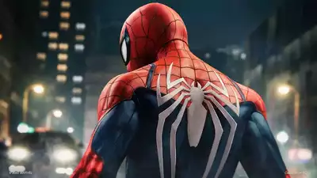

About Spider-Man:

Our friendly neighbourhood Spider-Man is a superhero that can cling to walls and swing through NYC using web shooters!
Trivia:
- Spider-Man's real name is Peter Parker, a high school student.
- Peter Parker gained his powers by being bitten by a radioactive spider!
- Spider-Man’s web dissolves within an hour and yet is strong enough to hold the Hulk
- Spider-Man’s web is faster than a bullet, in one situation Spider-Man managed to web a gun as the trigger was pulled.
- Peter was brought up by his Aunt May and Uncle Ben. His parents passed away when he was very young.
Spider-Man's Friends
Peter has quite a few number of friends. His best friend is Harry Osborn, the son of Norman Osborn who is the head of Oscorp Industries.
Click on the links below for more information!
Foes: Archnemises Of Spider-Man
Unlike most super-heroes having one archnemises, Spider-Man has three! (apart from the sinister six), here they are: